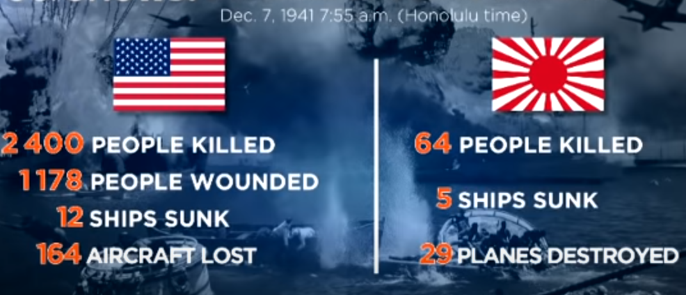

H i r o h i t o
Hirohito was the 124th Emperor of Japan

Hirohito
Who is Hirohito and more about his life
Hirohito was the Emperor of Japan from 1926 until his death in 1989 (1901 - 1989). Although he was the 124th Emperor, he was the longest-serving monarch in it's history. He spent nearly 64 years ruling Japan. Hirohito was born in Tokyo, the time when his grandfather, Emperor Meiji was ruling Japan (everything was well established). His father was ascended to throne in 1912. Due to harsh mental conditions and physical health he passed away and descended the line to his son, Hirohito. Hirohito is grown up with a retired military officer, to build up what's needed for the emperor.
What are facts that I should know about Hirohito?
I have a lot of facts in mind but I am going to put just 8
- he was the longest-serving monarch in history of Japan.
- The line was passed from his grandfather, father to him.
- He was the first crowned prince to travel to Europe.
- Hirohito was fascinated by marine biology, he even wrote several books about.
- When he was 11 years old he travel through Europe for six months. He stayed mainly in England and France. But he also made visits to Belgium, Netherlands and Italy.
- He became the emperor after coming from the trip in 1926 when his father passed away by heart attack.
- Japan was included in axis power and had major role in pacific part in world war 2.
- He was the only 15 year old when he became the Emperor.
Before WW2 Japan
Before world war 2 Japan in 1929 faced The Great Depression with very limited resources (for example oil and coal) and was devastated by it. Country in a island was out of resources and had to heavily depend on trade with foreign countries. Japan exporting items like silk in exchange of valuable resources like coal and oil. By the great depression the world's economy collapsed. And Japan's silk market was also crashed. Suffering of million's of people's starvation Japan glanced at Western values. By this Japan had to expand the empire get resources by conquest. Japan invaded Manchuria which had everything that Japan needed.
Why is Hirohito important to study when learning about WW2 and what role did he play in WW2
Hirohito was the leader of Japan during WW2. Hirohito is very important to learn for WW2 because Japan signed up into the axis power during ww2, Japan attacked almost every part of asia and even USA. Their impact of invading neighboring countries caused a lot of conflict and changes during the war and after the war.
Pearl Harbor
Details about the Pearl Harbor
Attack on Pearl Harbor was a surprise attack by the Japan on USA navy base on Pearl Harbor. the event happen on December 1941. Surprisingly it only lasted for 1 and a half hour. despite of the time the damage is horrendous.
Down below the image tells us how successful the attack was but soon things will change. USA for revenge dropped two bombs on two of the populated cities in Japan.
Pearl harbor is located on Hawaiian island of Oahu about center of pacific ocean. It was a war between USA and Japan.
What caused this event?
There is about 3 reasons why Japan attacked pearl harbor that I can think of.
- They wanted expand in pacific.
- Need of resources
- Surprise attack and get as many ships as possible so that they can conquer southeast asia without disturbance
How did the event change the outcome of the war?
Because Japan attacked USA and declared war, USA joined WW2 and not long time later they attacked tokyo and bombed hiroshima and nagasaki. in conclusion it would have been much better for Japan if they did not bomb pearl harbor.